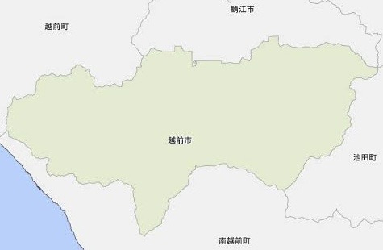

Enjoy with
越前市周辺の観光マップ
各観光地のURL掲載。アポイントメントはとろう。

1
2
3
4
5
6
7
8
9
10
11
12
13
ハピラインふくい武生駅
北陸新幹線越前たけふ駅&道の駅
サンドーム福井
越前そばの里
越前和紙の里
タケフナイフビレッジ
西山公園
越前海岸
今庄365スキー場
ツリーピクニックアドベンチャー
紙祖神 岡太神社・大瀧神社
紫ゆかりの館
越前市役所
越前がに
1.ハピラインふくい武生駅